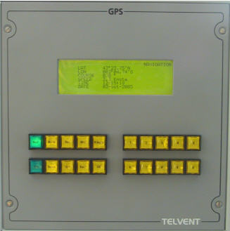
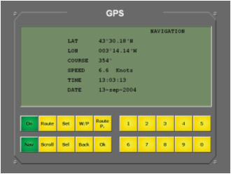

GPS
El módulo de GPS simula un equipo GPS real que proporciona al operador situación geográfica, rumbo y velocidad del buque controlado así como la fecha y la hora. Además incluye funciones de gestión de waypoints (puntos de paso) y derrotas.
La versión hardware y la versión software son idénticas en su funcionamiento y presentación de datos, únicamente difieren en la forma de acceso que en el primer caso es a través de botones físicos reales y en el segundo caso son botones software de acceso directo a través de una pantalla táctil.
Versión Hardware:

Versión Software:

El módulo de GPS se compone de los elementos siguientes:
- Pantalla (LCD) de ocho líneas que muestra la información al operador.
- Teclado funcional de 20 teclas que permite utilizar todas las funciones del equipo.
Mediante la fila superior del bloque de teclas de la izquierda, el operador puede acceder a las distintas pantallas de configuración (Programación de Rutas, Programación de Waypoints, y Configuración del equipo) y de modos de operación del equipo (Navegación y Seguimiento de Ruta).
El bloque de teclas de la derecha es un teclado numérico para la introducción de valores, y la fila inferior del bloque de teclas de la izquierda (excepto el pulsador de Encendido / Apagado) son teclas para la edición de campos, necesarias en las pantallas de configuración. El funcionamiento general de estas teclas es el siguiente:
Cuando el operador accede a cualquiera de las pantallas de configuración, aparece seleccionado para edición el primer campo editable de la misma. Bien mediante las teclas numéricas, o bien mediante el pulsador de Selección (Sel) si el campo es opcional, el operador puede introducir el nuevo valor deseado. Mediante el pulsador de validación (Ok), se acepta el valor introducido y se pasa a editar el siguiente campo de la pantalla. Mediante el pulsador de retorno (Back), se cancela el valor introducido en el campo en edición, y se pasa a editar el campo anterior. El campo en edición es indicado siempre mediante un cursor intermitente. Para las pantallas de configuración de Waypoints y Rutas, compuestas de varias páginas de valores, se debe usar el pulsador de avance (Scroll) pasar avanzar a las siguientes páginas.
A continuación se describe con detalle el manejo de este equipo:
Encendido y Apagado del Equipo
El pulsador ON / OFF debe ser pulsado para encender o apagar el equipo. Cuando el equipo se enciende, inicialmente muestra la pantalla de búsqueda, que simula el tiempo de establecimiento de conexión con los satélites:

Una vez finalizada la búsqueda el equipo inicia el Modo de Navegación.
Modos de Operación del GPS
- Latitud y Longitud en grados y minutos, con precisión de centésimas de minuto,
- Rumbo en grados, con precisión de un grado,
- Velocidad en nudos o km/h, según la configuración del equipo, y con precisión de décimas de unidad.
- Hora y Fecha actual, en formato HH:MM:SS y Día-Mes-Año.
- Identificador de Ruta y Pierna seleccionadas. Estos campos pueden ser modificados por el operador. Una vez que selecciona una ruta y pierna válidas, se mostrarán los siguientes datos:
- Distancia al siguiente Waypoint de la ruta, en millas o kilómetros, según configuración del equipo, y con precisión de décimas de unidad.
- Tiempo (ETA, Elapsed Time on Arrival) hasta el siguiente Waypoint de la ruta, en minutos y segundos.
- Distancia al último Waypoint de la ruta, en millas o kilómetros, según configuración del equipo, y con precisión de décimas de unidad.
- Tiempo (ETA, Elapsed Time on Arrival) hasta el último Waypoint de la ruta, en minutos y segundos.
Modo de Navegación: en este modo de operación, el equipo muestra continuamente una pantalla no editable con los siguientes datos:

Este es el modo de operación por defecto del equipo, y se accede a este modo desde cualquier otro mediante pulsación de la tecla Nav.
Modo de Seguimiento de Rutas: en este modo de operación el equipo muestra continuamente una pantalla para control del seguimiento de una ruta, con los siguientes datos:

A este modo de operación se accede desde cualquier otro mediante pulsación de la tecla Route.
Pantallas de Configuración
- TIME: Hora de referencia LOCAL o UTC (Coordinated Universal Time).
- OFFSET: Desfase entre la hora local y la hora UTC
- UNITS: Unidades de medida para la distancia en millas náuticas (Nm) o kilómetros (Km).
- WPT‑SWITCHING: Modo de seguimiento de ruta MANUAL o AUTO.
- RADIUS: Distancia de aproximación del buque para cambio de waypoints.
- BRIGHTNESS: nivel de brillo del display de 0 a 9.
- CONTRAST: nivel de contraste del display de 0 a 9.
Pantalla de Programación de Waypoints: mediante esta pantalla el operador puede introducir o editar hasta 100 Waypoints:

A esta pantalla se accede desde cualquier otra mediante pulsación de la tecla W/P. Para la edición de los Waypoints se debe hacer uso de las teclas numéricas y de edición como se explica más arriba.
Pantalla de Programación de Rutas: mediante esta pantalla el operador puede introducir o editar hasta 100 rutas, definidas por los Waypoints que la componen:

Cada una de las rutas se define por hasta 100 piernas, y cada pierna queda definida por un identificador de Waypoint previamente definido, que corresponderá al punto final de la pierna. El operador deberá introducir previamente el identificador de la ruta que desea modificar, y entonces podrá editar las piernas que la componen.
Para cada pierna se muestra la demora y distancia desde el punto inicial al punto final de la misma, excepto para la primera pierna, para la cual se muestra la demora y distancia desde la posición actual del buque al punto final de la pierna.
A esta pantalla se accede desde cualquier otra mediante pulsación de la tecla Route P.. Para la edición del identificador y de las piernas que la componen se debe hacer uso de las teclas numéricas y de edición como se explica más arriba.
Configuración del Equipo: mediante esta pantalla el operador puede modificar la configuración general del equipo:

Las opciones de configuración del equipo son las siguientes:
Los dos últimos campos afectan al modo de operación de Seguimiento de Ruta. Si WPT‑SWITCHING es MANUAL, el operador deberá seleccionar el siguiente Waypoint manualmente, y si es AUTO, cuando el buque se aproxime al siguiente Waypoint a una distancia menor que RADIUS, automáticamente cambiará al siguiente Waypoint.
A esta pantalla se accede desde cualquier otra mediante pulsación de la tecla Set. Pulsando una segunda vez sobre este pulsador se accede a la pantalla de configuración de los niveles de brillo y contraste del display:

Mediante esta pantalla el operador puede realizar los siguientes ajustes del display: